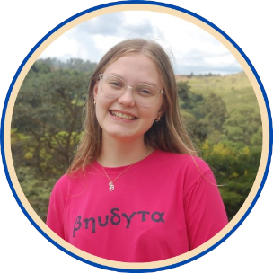

As fundadoras
Isabely Rocha - 16 anos
"Contribuir para o bem-estar das pessoas, especialmente aquelas muitas vezes esquecidas pela sociedade, é extremamente gratificante. Mesmo sem conviver diretamente com os agricultores, minhas pesquisas me permitiram mergulhar na realidade e nos desafios diários desses heróis invisíveis. É uma experiência que vai muito além do aprendizado acadêmico."

Mariana Godoi - 17 anos
"Percebi que ajudar os agricultores me trazia uma alegria imensa, algo que descobri a partir das experiências com minha família, que serviram como base para esta ideia. Nunca imaginei o quanto seria significativo e envolvente dedicar-me a este projeto."